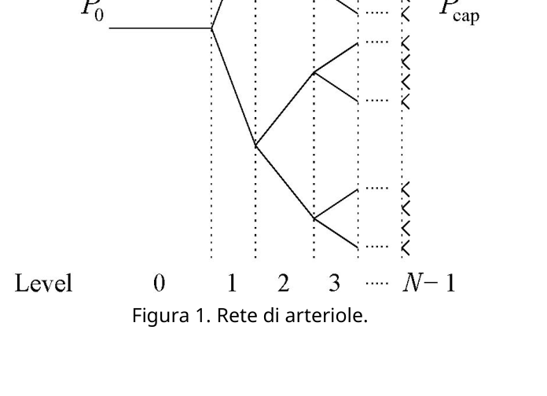
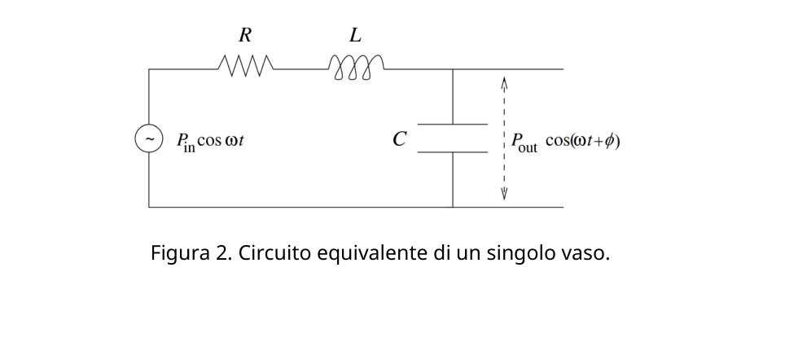
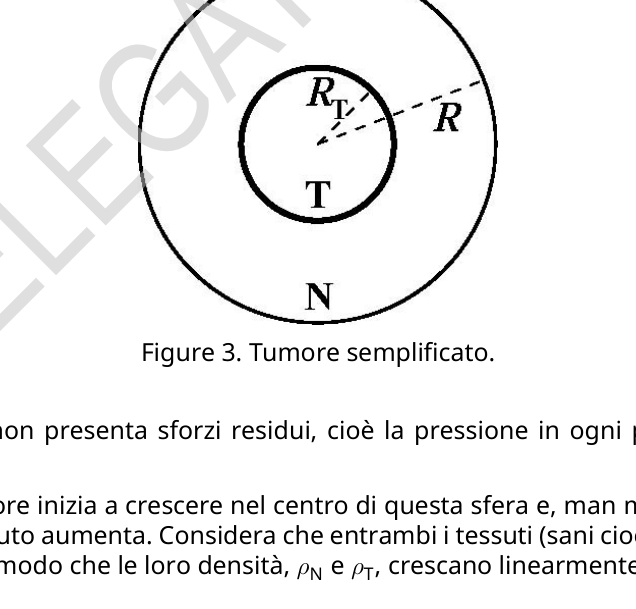

Theory Q3-1 Italian (Italy) Fisica dei Sistemi Viventi (10 punti) Dati: pressione atmosferica normale, P0 = 1.013 105 Pa = 760 mmHg Part A. La fisica del flusso sanguigno (4.5 punti) In questa parte analizzerai due modelli semplificati del flusso sanguigno nei vasi. I vasi sanguigni sono approssimativamente di forma cilindrica, ed è noto che per un flusso stazionario, non turbolento di un fluido incomprimibile in un cilindro rigido, la differenza di pressione del fluido alle due estremità del cilindro è data da 8lη πr4 Q, (1) dove le rsono la lunghezza e il raggio del cilindro, ηè la viscosità del fluido e Qè la portata volumetrica, cioè il volume del fluido che attraversa la sezione trasversale del cilindro per unità di tempo. Questa espressione è spesso sufficiente per fornire il corretto ordine di grandezza della differenza di pressione nel vaso, anche senza prendere in considerazione le variazioni periodiche del flusso, la compressibilità del vaso e la sua forma irregolare, ed il fatto che il sangue non è semplicemente un fluido ma una miscela di cellule e plasma. Inoltre, questa espressione ha la stessa forma della legge di Ohm, con la portata volumetrica corrispondente alla corrente, la differenza di pressione alla tensione, e il fattore R= 8lη πr4 alla resistenza. Considera per esempio la rete simmetrica di arteriole (piccole arterie) illustrata nella Figura 1 che porta il sangue ad una distesa di capillari di un tessuto. In questa rete, ad ogni biforcazione un vaso è diviso in due identici vasi. Tuttavia, i vasi di livello più alto sono più sottili e più corti: supponi che i raggi e le lunghezze dei vasi in due livelli consecutivi, ie i+ 1 , siano collegati tra loro in modo che ri+1 = ri/21/3 e che li+1 = li/21/3. Figura 1. Rete di arteriole.
Theory Q3-2 Italian (Italy) A.1 Ricava un’espressione per la portata volumetrica, Qi, in un vaso del livello i, in funzione del numero totale di livelli N, della viscosità η, del raggio r0 e lunghezza l0 del primo vaso, e della differenza P0 tra la pressione delle arteriole del livello 0, P0, e la pressione della distesa dei capillari Pcap. 1.3pt A.2 Calcola il valore numerico della portata volumetrica Q0dell’arteriola al livello 0, se il suo raggio è 6.0 m e la sua lunghezza è 2.0 m. Supponi che la pressione all’entrata dell’arteriola sia 55 mmHg e che la rete di vasi abbia N= 6 livelli che collegano questa arteriola alla distesa di capillari alla pressione di 30 mmHg. Ipotizza che la viscosità del sangue sia η= 3.5 kg . Esprimi il risultato in ml/h. 0.5pt Un vaso sanguigno come circuito RLC L’approssimazione di vaso rigido cilindrico è insufficiente per diverse ragioni. E’ di particolare importanza includere la dipendenza dal tempo del flusso e considerare la variazione di diametro del vaso che avviene quando la pressione varia durante il pompaggio ciclico del sangue prodotto dal cuore. Inoltre, è stato osservato che nei vasi più grandi la pressione del sangue varia in modo significativo durante un ciclo, mentre in quelli più piccoli l’ampiezza delle oscillazioni della pressione è molto inferiore, e che il flusso è quasi indipendente dal tempo. Quando la pressione aumenta all’interno di un singolo vaso elastico, avverrà un aumento del suo diametro, permettendo così di immagazzinare più fluido nel vaso, e di scaricarlo invece quando la pressione diminuisce. Per questo motivo, il comportamento elastico di un vaso può essere simulato aggiungendo un condensatore alla nostra descrizione iniziale. Inoltre, quando consideriamo la dipendenza dal tempo della portata volumetrica, si deve tenere presente l’inerzia del fluido che è proporzionale alla sua densità ρ= 1.05 103 kg . Questa inerzia può essere descritta come un’induttanza nel nostro modello. Nella Figura 2 il modello di un singolo vaso è rappresentato da un circuito equivalente. La capacità e l’induttanza equivalenti sono date da C= 3lπr3 2Eh and L= 9lρ 4πr2 , (2) rispettivamente, dove hè lo spessore della parete del vaso ed Eil modulo di Young dell’arteria, un coefficiente che descrive la deformazione del tessuto del vaso quando una forza viene applicata. Il modulo di Young ha la stessa unità di misura della pressione ed è dell’ordine di E= 0.06 MPa per le arteriole. Figura 2. Circuito equivalente di un singolo vaso.
Theory Q3-3 Italian (Italy) A.3 Calcola, in regime stazionario, l’ampiezza della pressione in uscita dal vaso, Pout, in funzione dell’ampiezza della pressione in ingresso, Pin, la resistenza equivalente, R, l’induttanza Le la capacità C, per un flusso di pulsazione ω. Stabilisci la condizione tra η, ρ, E, h, re laffinché, per valori bassi della pulsazione , l’ampiezza di oscillazione della pressione in uscita sia inferiore a quella di Pin. 2.0pt A.4 Per la rete di vasi in A.2 stima lo spessore massimo hdella parete dell’arteriola in modo che la condizione stabilita in A.3 sia soddisfatta (ipotizza che hsia indipendente dal livello). 0.7pt Parte B. Crescita di un tumore (5.5 punti) La crescita di un tumore è un processo molto complesso dove i meccanismi biologici di selezione naturale e proliferazione delle cellule sono intrecciati con la fisica. In questo problema considereremo un modello semplificato per la crescita di un tumore che descrive l’aumento della pressione comunemente osservata nei tumori solidi. Consideriamo un gruppo di cellule sane che formano un tessuto circondato da una membrana inestensibile, che costringe il tessuto a mantenere sempre la stessa forma: una sfera di raggio R (Figura 3). Figure 3. Tumore semplificato. Inizialmente il tessuto non presenta sforzi residui, cioè la pressione in ogni punto è uguale a quella atmosferica. All’istante t= 0, un tumore inizia a crescere nel centro di questa sfera e, man mano che cresce, la pressione all’interno del tessuto aumenta. Considera che entrambi i tessuti (sani cioè normali, N, e il tumore, T) siano comprimibili in modo che le loro densità, ρN e ρT, crescano linearmente con la pressione: ρN = ρ0 (1 + p KN ) , ρT = ρ0 (1 + p KT ) , (3) dove ρ0 è la densità del tessuto a riposo, pè la differenza di pressione rispetto alla pressione atmosferica e KN , KT i moduli di compressibilità (moduli di massa) dei tessuti normali e tumorali, rispettivamente. In generale, i tumori sono più rigidi e quindi hanno un modulo di massa più elevato.
Theory Q3-4 Italian (Italy) B.1 La massa delle cellule sane non viene alterata dalla crescita del tumore. Calcola il rapporto tra il volume del tumore e il volume totale del tessuto, v= VT/V, in funzione del rapporto tra la massa del tumore (MT) e la massa del tessuto sano (MN), μ= MT/MN e il rapporto tra i moduli di massa, κ= KN/KT. 1.0pt L’ipertermia è talvolta impiegata assieme alla chemioterapia e alla radioterapia nel trattamento del cancro. Con l’ipertermia, le cellule cancerogene sono selettivamente riscaldate dalla normale temperatura del corpo umano , 37 oC, fino ad una temperatura superiore a 43 oC, inducendo la loro morte. I ricercatori stanno attualmente sviluppando dei nanotubi di carbonio ricoperti con speciali proteine in grado di legarsi alle cellule tumorali. Quando il tessuto è irradiato con radiazione nel vicino infrarosso, i nanotubi la assorbono in misura molto maggiore rispetto ai tessuti circostanti e quindi possono essere riscaldati selettivamente così come le cellule tumorali a cui sono attaccati. Supponi che il tumore, le cellule sane e il tessuto circostante abbiano una conduttività termica costante k, cioè nella geometria di questo problema, l’energia che attraversa una superficie sferica di raggio r per unità di tempo e per unità di area sia uguale a kvolte la derivata della temperatura rispetto ad rI nanotubi sono uniformemente distribuiti all’interno del volume del tumore e sono in grado di rilasciare una potenza Pdi energia termica per unità di volume. Supponiamo che la temperatura sia uguale alla normale temperatura corporea umana molto lontana da quella del tumore. B.2
p.1 — Rete di arteriole ad albero binario

p.2 — Circuito RLC equivalente di un vaso

p.3 — Tumore semplificato a cerchi concentrici

Topic: Fluid Mechanics, Circuits, Elasticity & Materials Metodi: Equivalent Circuit Reduction, Differential Equations, Stress-Strain Analysis, Physical Modeling Competenze: Mathematical Modeling, Physical Reasoning, Estimation & Approximation Objects: Tube, Capacitor, Inductor, Resistor, Membrane Fonte: Testo (PDF) — p.1
Theory Q3-1 Italian (Italy) Physics of living systems (10 points) Dati: pressione atmosferica normale, P0 = 1.013 105 Pa = 760 mmHg Part A. Physics of blood flow (4.5 points) In this section, you’ll look at two simplified models of blood flow in the blood vessels. The blood vessels are approximately cylindrical in shape, and it’s known that for a steady flow, Non-turbulent of an incompressible fluid in a rigid cylinder, the difference in fluid pressure at two ends of the cylinder are given by 8lη πr4 Q, (1) where the length and radius of the cylinder are given, η is the viscosity of the fluid and Q is the volumetric flow rate, That is the volume of fluid passing through the cylinder cross section per unit time. This expression is often sufficient to provide the correct order of magnitude of the difference between pressure in the vessel, even without taking into account the periodic fluctuations in the flow, the compressibility of the vessel and its irregular shape, and the fact that blood is not simply a fluid but A mixture of cells and plasma. Also, this expression has the same form as Ohm’s law, with the volumetric flow rate corresponding to the current, the pressure to voltage difference, and the factor R= 8lη The resistance is πr4. Consider, for example, the symmetrical network of arteries (small arteries) shown in Figure 1 which blood to a stretch of capillaries in a tissue. In this network, for each fork, a vessel is divided. in two identical vessels. However, the higher-level vessels are thinner and shorter: suppose that the beams and the The lengths of the vessels in two consecutive levels, i.e. i+1, are connected so that ri+1 = ri/21/3 and where li+1 = li/21/3. Figure 1 is shown. A network of arteries.
Theory Q3-2 Italian (Italy) A.1 It was an expression for the volume volume, Qi, in a level i vessel, in The pressure of the first vessel is measured in terms of the total number of N levels, viscosity η, radius r0 and length l0 of the first vessel, and the difference P0 between the pressure of the first vessel and the pressure of the second vessel. The test results are given in the following table: 1.3pt A.2 Calculate the numerical value of the volumetric flow Q0 of the arteries at level 0, if its radius is 6,0 m and its length is 2,0 m. Suppose that the The pressure at the entrance of the artery is 55 mmHg and the vascular network has N= 6 levels linking this artery to the expansion of capillaries to the pressure of 30 mmHg. Assume that the viscosity of the blood is η= 3.5 kg . Express the result in ml/h. 0.5pt A blood vessel as an RLC circuit The approximation of a cylindrical rigid vessel is insufficient for several reasons. E of particular importance include the dependence on flow time and consider the change in the diameter of the vessel that occurs when the pressure changes during the cyclic pumping of the blood produced by the heart. In addition, it was observed that in the larger vessels blood pressure varies significantly during a cycle, While in smaller ones the width of the pressure oscillations is much lower, and the flow is It’s almost weather-independent. When the pressure increases within a single elastic vessel, there will be an increase in its diameter, thus allowing more fluid to be stored in the vessel, and discharged instead when the pressure It’s going down. For this reason, the elastic behavior of a vessel can be simulated by adding A condenser to our initial description. And when we consider the dependence on time, The volume of the liquid shall be measured at the level of the liquid, and the liquid’s inertia shall be proportional to its density ρ= 1.05 103 kg . This inertia can be described as an inductance in our model. In Figure 2 the model of a single vessel is represented by an equivalent circuit. The capacity and Equivalent inductance is given by: C= 3lπr3 2Eh and L= 9lρ 4πr2 , (2) where is the thickness of the vessel wall and the Young’s Eil artery, a coefficient describing the deformation of the vessel tissue when force is applied. The form The pressure measurement unit of Young’s is the same as the pressure unit of E=0.06 MPa for arterials. Figure two. Circuit equivalent to a single vessel.
Theory Q3-3 Italian (Italy) A.3 Calculates the volume of pressure exiting the vessel at steady state, Pout, In the case of a pulse flow ω, the input pressure is the input pressure, the input pressure, the input resistance, the input resistance, the input resistance, the input resistance, the input resistance, the input resistance, the input resistance, the input resistance, the input resistance, the input resistance, the input resistance, the input resistance, the input resistance, the input resistance, the input resistance, the input resistance, the input resistance, the input resistance, the input resistance, the input resistance, the input resistance, the input resistance, the input resistance, the input resistance, the input resistance, the input resistance, the input resistance, the input resistance, the input resistance, the input resistance, the input resistance, the input resistance, the input resistance, the input resistance, the input resistance, the input resistance, and the input resistance, respectively. Establish the condition between η, ρ, E, h, where, for low pulse values, The output pressure oscillation width shall be less than that of the Pin. 2.0pt A.4 For the vascular network in A.2 estimate the maximum thickness of the artery wall so that the condition in A.3 is satisfied (hypothesis that The level of the programme is independent of the level of the programme. 0.7pt Part B. Growth of a tumor (5.5 points) The growth of a tumor is a very complex process where biological mechanisms of natural selection And cell proliferation is intertwined with physics. In this problem we will consider a model Simplified for growth of a tumor describing the commonly observed increase in pressure In solid tumors. Consider a group of healthy cells that form a tissue surrounded by an inextensible membrane, which forces the tissue to maintain the same shape at all times: a sphere of radius R (Figure 1). 3). Figure 3 is shown below. Simplified tumor. The tissue initially has no residual stresses, i.e. the pressure at each point is equal to that at the The atmosphere. As soon as t=0, a tumor begins to grow in the center of this sphere and as it grows, the pressure inside the tissue increases. It considers that both tissues (healthy i.e. normal, N, and the tumor, T) are compressed so that their densities ρN and ρT increase linearly with the pressure: ρN = ρ0 (1 + p KN ) , ρT = ρ0 (1 + p KT ) , (3) where ρ0 is the density of the resting tissue, for the difference in pressure relative to atmospheric pressure and KN , KT the compression modules (mass modules) of normal and tumour tissues, respectively. In Generally, tumors are more rigid and therefore have a higher mass.
Theory Q3-4 Italian (Italy) B.1 The mass of healthy cells is not altered by the growth of the tumor. Calculate The ratio of the volume of the tumor to the total volume of the tissue, v= VT/V, in function of the ratio of tumor mass (MT) to healthy tissue mass (MN), μ= MT/MN and the ratio of the mass modules, κ= KN/KT. 1.0pt Hyperthermia is sometimes used in combination with chemotherapy and radiation therapy in the treatment of cancer. With hyperthermia, cancer cells are selectively heated to normal temperature The human body, 37 oC, to a temperature above 43 oC, causing their death. Researchers are currently developing carbon nanotubes coated with special proteins that can binding to cancer cells. When tissue is irradiated by radiation into the nearby infrared, the nanotubes They absorb much more of the material than the surrounding tissue and can therefore be heated. selectively as well as the cancer cells they’re attached to. Suppose the tumor, healthy cells and surrounding tissue have a constant thermal conductivity k, i.e. in the geometry of this problem, the energy that passes through a spherical surface of radius r per unit of time and per unit of area is equal to kvolt the temperature derivative with respect to rI The nanotubes are evenly distributed within the tumor volume and are able to release a power Pdi of thermal energy per unit volume. Suppose the temperature is equal to Human body temperature is very far from that of the tumor. B.2
p.1 — Rete di arteriole ad albero binario
p.2 RLC equivalent circuit of a vessel
p.3 — Tumore semplificato a cerchi concentrici
Topic: Fluid Mechanics, Circuits, Elasticity & Materials Metodi: Equivalent Circuit Reduction, Differential Equations, Stress-Strain Analysis, Physical Modeling Competenze: Mathematical Modeling, Physical Reasoning, Estimation & Approximation Objects: Tube, Capacitor, Inductor, Resistor, Membrane Fonte: Testo (PDF) — p.1